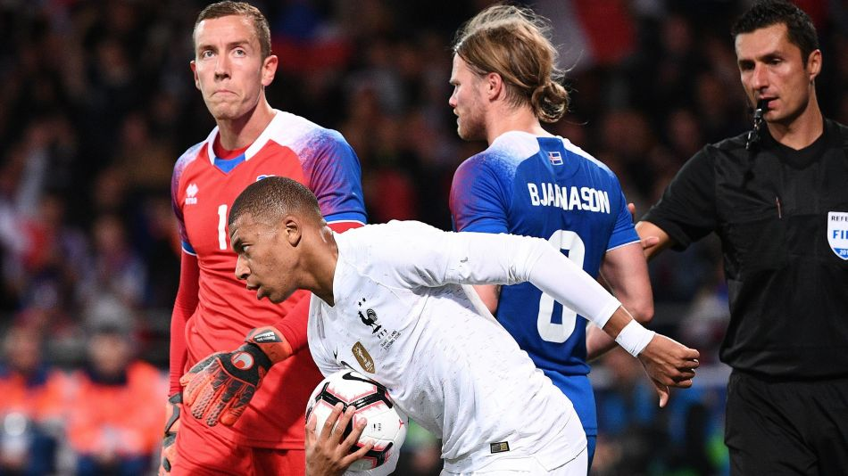

Pour les Bleus, la route de l'Euro passera par l'Islande et la Turquie

EURO 2020 - La France connait le programme qui va l'occuper de mars à novembre 2019. Les champions du monde évolueront dans le groupe H des éliminatoires de l'Euro 2020 avec l'Islande, la Turquie, l'Albanie, la Moldavie et Andorre. Des têtes connues et d'autres beaucoup moins.
Les vice-champions d'Europe et rois du monde français sont fixés : pour disputer l'Euro 2020, compétition itinérante disputée dans douze villes du continent, il faudra terminer aux deux premières places du groupe H, composé de l'Islande, de la Turquie, de l'Albanie, de la Moldavie et d'Andorre. Des adversaires connus, d'autres moins.
Principaux adversaires des Bleus à sur le papier, l'Islande et la Turquie. Les Islandais se sont régulièrement trouvés sur la route des Bleus lors des éliminatoires de l'Euro (1976, 1988, 1992 et 2000). Surtout, les Islandais, qui ont disputé leur première compétition internationale à l'occasion du dernier Championnat d'Europe des nations en France, avaient croisé le fer avec les Bleus en quart de finale (5-2).
Les Turcs et les Bleus ont une histoire commune moins riche puisque le dernier match entre les deux équipes remonte à 2009 (1-0). La France a gagné ses quatre confrontations face à la Turquie, dont une seule officielle. Au Stade de France et en demi-finale de la Coupe des Confédérations 2003, les Tricolores s'étaient imposés (3-2). Un match joué dans une atmosphère pesante et triste puisque Marc Vivien Foé avait trouvé la mort quelques heures auparavant, lors de la première demie.
Moldavie, une première
A l'image de l'Islande, l'Albanie est également un adversaire que la France retrouve régulièrement puisque les deux équipes étaient ensemble lors des qualifications pour l'Euro 1992 et 2012. Les deux nations se sont affrontées trois fois sous l'ère Deschamps. Pour un bilan équilibré : 1 victoire, 1 nul, 1 défaite. La France a gagné le match qu'il fallait, au premier tour du Championnat d'Europe des Nations 2016 (2-0 à Marseille). Mais que ce fut compliqué...
Avec la Moldavie, les Tricolores vont plonger dans l'inconnu puisque ce sera une première historique entre les deux nations. Avec Andorre, ce sera une plongée dans les souvenirs puisque les deux équipes n'ont plus croisé le fer depuis 14 ans. La France garde un souvenir doux amer d'une rencontre de juin 1999, à Barcelone, lors des éliminatoires de l'Euro 2000. Les Bleus de Lemerre, champions du monde en titre, avaient peiné comme jamais pour s'imposer. Dugarry expulsé en début de match, les Français avaient gagné sur un penalty de Leboeuf en fin de partie. Un an plus tard, les Bleus étaient champions d'Europe.